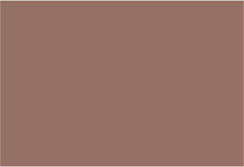

Види тварин, занесені до Червоної книги України
Частка видів тварин, занесених до Червоної книги України
(% від загальної кількості видів)
| до 3,0 | |
| 3,0-4,0 | |
| 4,0-5,0 | |
|  | понад 5,0 |
Чисельність видів тварин, занесених до Червоної книги України
(одиниць)
| до 100 | |
| 100 - 200 | |
 | 201 - 300 |
 | понад 300 |
Охоронний статус видів тварин
(% від загальної кількості видів)
| зникаючі та зниклі | |
| вразливі | |
| рідкісні | |
| недостатньо відомі та неоцінені |